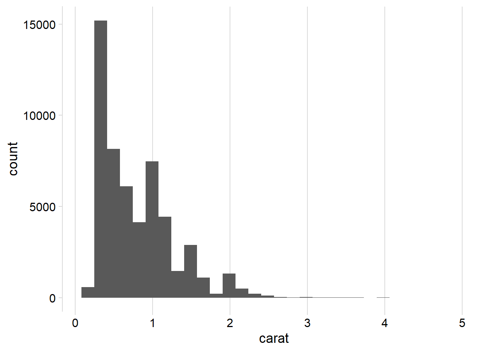
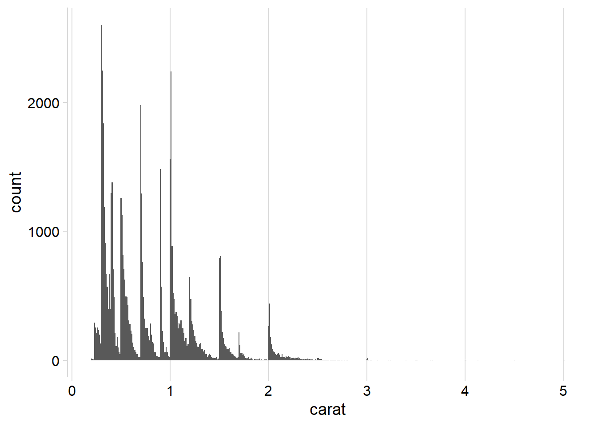
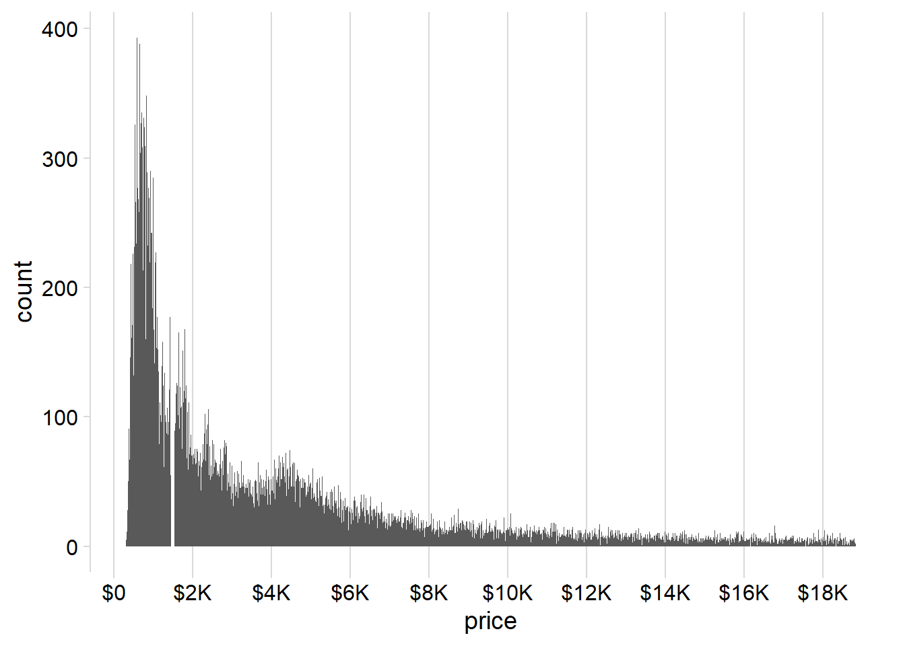
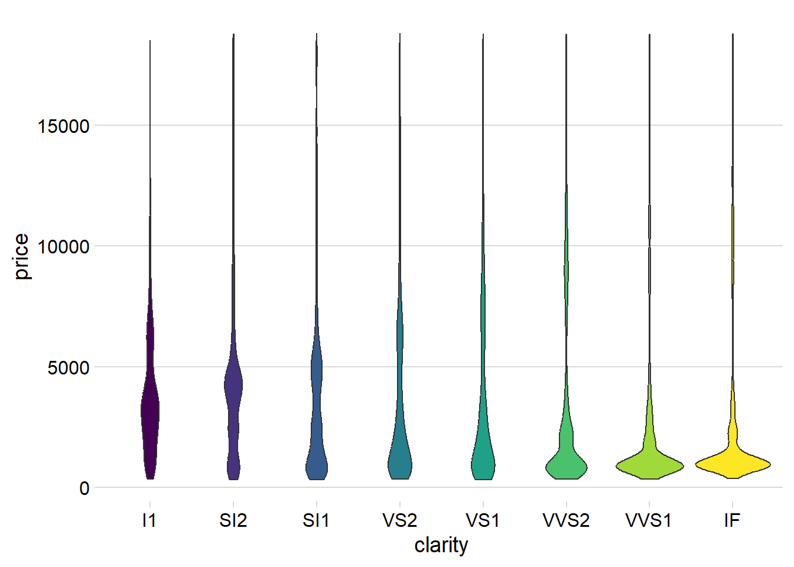
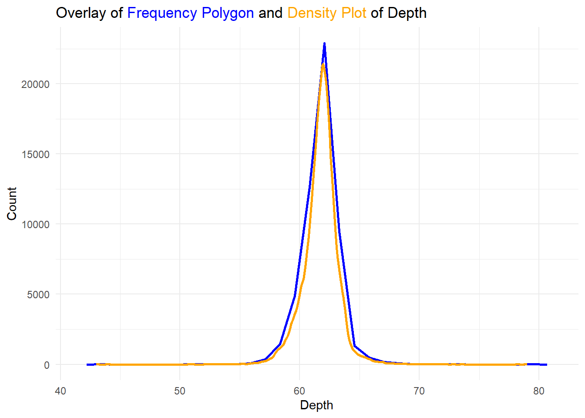

Code
library(tidyverse)
library(ggtext)Statistical Summaries
library(tidyverse)
library(ggtext)What bin-width tells you the most interesting story about the distribution of carat?
The Figure 1 presented below illustrates various distribution histograms for the variable “carat” in the diamonds dataset, created using ggplot2 and geom_histogram().
The bin width of 0.01 reveals the most interesting narrative and pattern:
Diamonds exhibit an overall right-skewed distribution, based on their carat.
Diamonds tend to cluster around specific values such as 1, 1.25, 1.5, 1.75, 2 and so on indicating observer bias in recording the carat of diamonds. There is a tendency to round off values during the recording process.
ggplot(diamonds, aes(carat)) +
geom_histogram() +
cowplot::theme_minimal_vgrid()
ggplot(diamonds, aes(carat)) +
geom_histogram(binwidth = 0.1) +
cowplot::theme_minimal_vgrid()
ggplot(diamonds, aes(carat)) +
geom_histogram(binwidth = 0.02) +
cowplot::theme_minimal_vgrid()
ggplot(diamonds, aes(carat)) +
geom_histogram(binwidth = 0.01) +
cowplot::theme_minimal_vgrid()



Draw a histogram of price. What interesting patterns do you see?
The histogram presented Figure 2 illustrates the distribution of the price variable, derived from the diamonds dataset within the ggplot2 package of R. Notably, we have utilized a lower bin width of 10 to discern intricate patterns.
Upon examination, it becomes evident that the distribution of prices is highly right-skewed.
Another intriguing observation is the conspicuous gap in the distribution, particularly around the $1500 mark. Within the interval spanning $1450 to $1550, there is a notable absence of diamonds. This anomaly raises the possibility of inadvertent deletion of certain observations within the dataset or, alternatively, could be attributed to errors in data recording. Further investigation may shed light on the cause of this unexpected pattern.
diamonds |>
ggplot(aes(price)) +
geom_histogram() +
cowplot::theme_minimal_vgrid() +
scale_x_continuous(labels = scales::label_number_si(prefix = "$"),
breaks = seq(0, 20000, 2000))
diamonds |>
ggplot(aes(price)) +
geom_histogram(binwidth = 10) +
cowplot::theme_minimal_vgrid() +
scale_x_continuous(labels = scales::label_number_si(prefix = "$"),
breaks = seq(0, 20000, 2000))

How does the distribution of price vary with clarity?
The Figure 3 depicts the distribution of price versus clarity for the diamond dataset. Given that price is a continuous variable and clarity is a categorical / discrete variable, various graphical representations can be employed for analysis. These include:
Multiple Box-plots (depicted below in Figure 3 (a) ): The use of multiple boxplots allows us to visually compare the distribution of prices across different clarity levels.
Violin Plots (depicted below in Figure 3 (b) ): The inclusion of violin plots provides a nuanced view of the price distribution.
The observed box-plots and violin plots reveal that the distribution of prices is right-skewed for all clarity levels. Furthermore, at higher clarity levels, the right-skewness becomes more pronounced, indicating a scarcity of highly priced diamonds within each clarity tier.
The data suggests a consistent right-skewed pattern across all clarity levels, with a notable intensification of skewness at higher clarity levels. This implies a scarcity of diamonds with exceptionally high prices within each clarity category.
The other methods which can be employed include: —
Histograms with Faceting: Employing histograms with faceting can offer additional insights into the distribution of prices within each clarity category, allowing for a more detailed examination.
Density Plots with Different Colors for Different Clarity Levels: Utilizing density plots with distinct colors for each clarity level enhances the clarity of the distribution patterns. This approach is less useful here as there many clarity levels, resulting in over-crowded density plots.
ggplot(diamonds, aes(clarity,
price,
fill = clarity)) +
geom_boxplot(outlier.alpha = 0.1,
varwidth = TRUE,
outlier.shape = 20) +
cowplot::theme_minimal_hgrid() +
theme(axis.line.x = element_blank(),
legend.position = "none")
ggplot(diamonds, aes(clarity,
price,
fill = clarity)) +
geom_violin() +
cowplot::theme_minimal_hgrid() +
theme(axis.line.x = element_blank(),
legend.position = "none")

Overlay a frequency polygon and density plot of depth. What computed variable do you need to map to y to make the two plots comparable? (You can either modify geom_freqpoly() or geom_density().)
As we can see in the Figure 4, we can overlay a frequency ploygon and a density plot of depth variable as follows:
Compute count on the y-axis in geom_density() using geom_density(aes(y = ..count..) to display counts on y-axis for both plots and overlay them, as shown in Figure 4 (a) .
Compute density on the y-axis in geom_freqpoly() using geom_freqpoly(aes(y = ..density..) to display densities on y-axis for both plots and overlay them, as shown in Figure 4 (b) .
title = "Overlay of <span style='color: blue;'>Frequency Polygon</span> and <span style='color: orange;'>Density Plot</span> of Depth"
ggplot(diamonds, aes(x = depth)) +
# Overlay frequency polygon
geom_freqpoly(color = "blue", lwd = 1) +
# Overlay density plot
geom_density(aes(y = ..count..),
col = "orange", lwd = 1) +
# Add labels and title
labs(title = title,
x = "Depth",
y = "Count") +
# Adjust theme for markdown element in the title
theme_minimal() +
theme(plot.title = element_markdown())
ggplot(diamonds, aes(x = depth)) +
# Overlay frequency polygon
geom_freqpoly(aes(y = ..density..),
color = "blue", lwd = 1) +
# Overlay density plot
geom_density(col = "orange", lwd = 1) +
# Add labels and title
labs(title = title,
x = "Depth",
y = "Density") +
# Adjust theme for markdown element in the title
theme_minimal() +
theme(plot.title = element_markdown())

Solutions (and Beyond): ggplot2 - Chapter 5 Solutions (and Beyond): ggplot2 - Chapter 5 Solutions (and Beyond): ggplot2 - Chapter 5 Solutions (and Beyond): ggplot2 Statistical Summaries Statistical Summaries